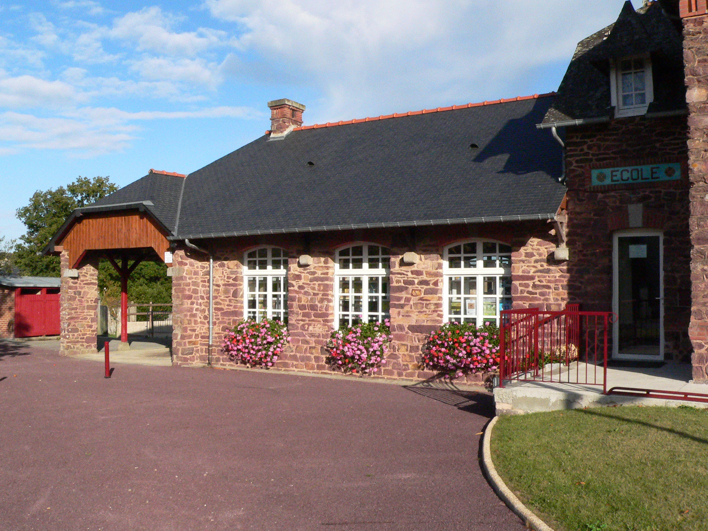

Histoire de l'école
Située à 30 km de Rennes, en Ille-et-Vilaine, la maison d'école de Saint-Gonlay est une ancienne école publique construite en 1904 par Jean-Marie Laloy. Le bâtiment de cette école est resté intact depuis sa construction, mais la salle de classe a dû être rénovée. Celle-ci est ouverte au public depuis 2008. Le bâtiment abrite aussi la mairie de Saint-Gonlay. Cet édifice utilise les matériaux environnants, le schiste pourpre, le poudingue et la brique rouge.
Activitées organisées
Ce lieu sert de cadre aux thèmes liés à l'école mais aussi à l'enfance. En effet, une salle recrée le logement de fonction de l'instituteur qui a été aménagé pour recevoir une muséographie qui parle de l'histoire de l'institution et de l'évolution de l'architecture des écoles de l'époque. Une troisième salle expose les jouets buissonnier : les écoliers des années 1950 construisaient eux-mêmes leurs jouets avec les matériaux de leur environnement. Des séances filmées d’animations réalisées dans la campagne du pays de Montfort avec des scolaires permettent de suivre le processus de fabrication des jouets, une activité est mise en place pour que les visiteurs puissent fabriquer eux-mêmes leurs jouets buissoniers.